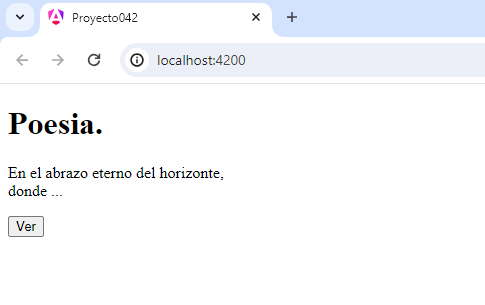

Vimos en conceptos anteriores que una pipe tiene por objetivo convertir un dato en la vista de la componente (html) con la finalidad que el usuario tenga una mejor experiencia, también vimos que el framework Angular provee un conjunto de pipes por defecto como pueden ser: uppercase, lowercase, json, date etc.
El decorador @Pipe aparece cuando tenemos que crear nuestras propias pipes que se adapten a resolver problemas de nuestra aplicación.Crear una pipe que trunque un texto y agregue puntos suspensivos que da a entender que el texto ha sido truncado.
Crearemos primero el proyecto
ng new proyecto042
Creamos la tubería (pipe) :
ng generate pipe truncarTexto
Se crean 2 archivos y pasamos a codificar nuestra pipe:
truncar-texto.pipe.ts
import { Pipe, PipeTransform } from '@angular/core';
@Pipe({
name: 'truncarTexto'
})
export class TruncarTextoPipe implements PipeTransform {
transform(texto: string, longitudMaxima: number = 50): string {
if (texto.length <= longitudMaxima) {
return texto;
}
// Truncar el texto y agregar puntos suspensivos
const textoTruncado = texto.slice(0, longitudMaxima) + '...';
return textoTruncado;
}
}
La tubería TruncarTextoPipe se utiliza para truncar un texto si supera una longitud máxima especificada.
import { Pipe, PipeTransform } from '@angular/core';
Importamos las interfaces Pipe y PipeTransform del módulo '@angular/core'.
@Pipe({
name: 'truncarTexto'
})
Como vemos utilizamos la función decoradora @Pipe y le pasamos como parámetro el nombre de nuestra tubería que haremos uso luego en una plantilla de una componente.
export class TruncarTextoPipe implements PipeTransform {
transform(texto: string, longitudMaxima: number = 50): string {
//lógica
}
}
La clase TruncarTextoPipe implementa la interfaz PipeTransform, que requiere la implementación del método transform. Este método se ejecutará cuando la tubería sea utilizada en una plantilla y toma dos parámetros:
if (texto.length <= longitudMaxima) {
return texto;
}
// Truncar el texto y agregar puntos suspensivos
const textoTruncado = texto.slice(0, longitudMaxima) + '...';
return textoTruncado;
La lógica del método verifica si la longitud del texto es menor o igual a la longitud máxima especificada. Si es así, el texto no se modifica y se devuelve tal cual. Si supera la longitud máxima, se trunca utilizando slice y se le añaden puntos suspensivos ('...') al final. El texto truncado es luego devuelto.
Este fragmento de código es un componente Angular que utiliza una tubería personalizada (TruncarTextoPipe) y manipula la visualización de un poema en función de la interacción del usuario según la presión de un botón.
app.component.ts
import { Component } from '@angular/core';
import { RouterOutlet } from '@angular/router';
import { TruncarTextoPipe } from './truncar-texto.pipe';
@Component({
selector: 'app-root',
imports: [RouterOutlet, TruncarTextoPipe],
templateUrl: './app.component.html',
styleUrls: ['./app.component.css']
})
export class AppComponent {
poesia = `<p>En el abrazo eterno del horizonte,<br>
donde el cielo y el mar se entrelazan,<br>
navegan sueños en olas danzantes,<br>
poesía salada que el viento abraza.</p>
<p>Las gaviotas pintan líneas al viento,<br>
testigos de historias que el mar relata,<br>
susurran sus secretos en cada momento,<br>
mientras las olas cantan su serenata.</p>`
completo = false;
mensajeBoton = "Ver"
cambiar() {
this.completo = !this.completo;
this.mensajeBoton = this.completo ? "Ocultar" : "Ver"
}
}
import { TruncarTextoPipe } from './truncar-texto.pipe';
Se importa la clase TruncarTextoPipe.
imports: [RouterOutlet, TruncarTextoPipe],
También debemos hacer referencia a la clase en la propiedad imports del decorador de la clase.
completo = false;
completo: Un booleano que indica si se debe mostrar el poema completo o truncado.
mensajeBoton = "Ver"
mensajeBoton: El mensaje que aparecerá en el botón para alternar entre la vista completa y la truncada.
cambiar() {
this.completo = !this.completo;
this.mensajeBoton = this.completo ? "Ocultar" : "Ver"
}
Un método que se ejecuta cuando se hace clic en el botón. Cambia el valor de completo y actualiza el mensaje del botón en consecuencia.
Y en la plantilla disponemos la llamada a la pipe que hemos creado:
app.component.html
<h1>Poesia.</h1>
@if (completo) {
<div [innerHTML]="poesia"></div>
} @else {
<div [innerHTML]="poesia|truncarTexto"></div>
}
<button (click)="cambiar()">{{mensajeBoton}}</button>
<router-outlet />
@if (completo) {
<div [innerHTML]="poesia"></div>
}
<router-outlet />
Si la propiedad 'completo' almacena un true, luego se muestra la poesía en forma completa.
[innerHTML]: Se utiliza para interpolar HTML dinámicamente, permitiendo que las etiquetas HTML en el contenido de poesia se interpreten correctamente.
@else {
<div [innerHTML]="poesia|truncarTexto"></div>
}
Por el else mostramos solo los primeros 50 caracteres contenidos en la propiedad 'poesia'.
Si queremos que se muestren solo los primeros 15 caracteres pasamos un parámetro a la pipe 'truncarTexto':
<div [innerHTML]="poesia|truncarTexto:15"></div>
Podemos probar esta aplicación también en la web aquí.